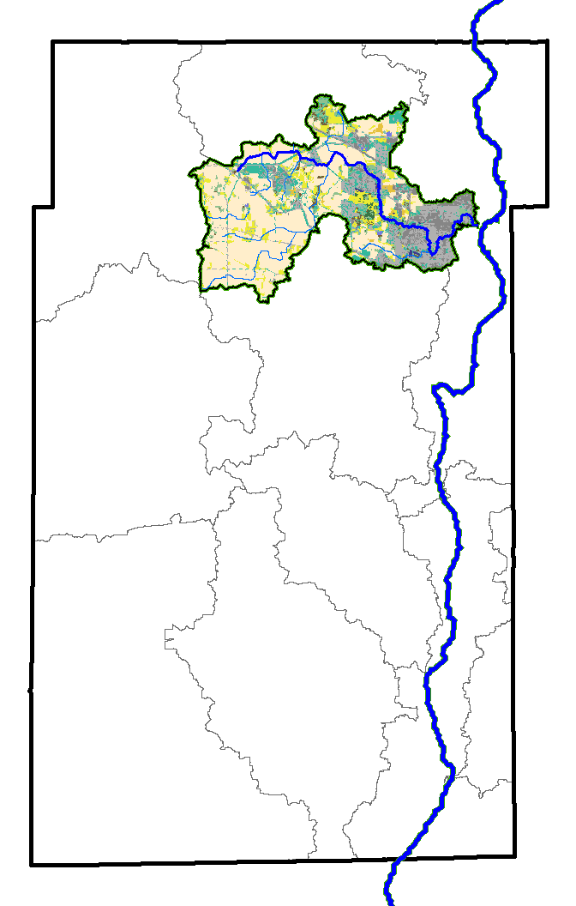

The following is a promotional piece for the annual Tyler Creek Watershed Coalition meeting. It highlights the land cover in the Tyler Creek Watershed within Kane County and it's proximity to the great Fox River running through the county.

The following is an excerpt from our Land Use Opinion report showing the regulatory/500 year flood plain and it's relation to the proposed development. Through a state Mandate, we provide natural resource inventory reports for all zoning changes taking place throughout the counties (Soil Reports, on-ground field verifications, wetlands, floodplains, green infrastructure plans, aquifer sensitivity, etc..). This map in particular I put my symbology skills to work to make it more visually appealing.

This graphic is a contribution I'm puttting towards the Saving Tomorrow's Agricultural Resources (S.T.A.R.) program. The program typically has a field sign to depict the rating, the point of this image is to have a stand-alone marketing product.

Next is a graphic I like to show depicting the land use of Kane and DuPage County. I think it gives great context to our situation and how we have a responsibility to promote well-informed devleopment as more and more agricultural land is converted to alternate land uses. The major rivers are highlighted to depict both KDSWCDs impact on sediment-laden water and also how everything we do ends up downstream

A big aspect to our organization is our Soil Erosion Control and Sediment Control program. Pretty much, we go to the construction sites and make sure everything is in place in order to follow their permit/the Water Quality Act. I report to various regulatory authorities, so I like to go above and beyond to really give an inspection report that captures the entire inspection. A big aspect of that is the spatial locations of where the photos were taken. Luckily, for the overlayed raster I had a recently flown over drown imagery to really show the state of the project. I also highlighted the boundary of the pre-construction delineated wetland to show what areas I prioritze in my inspection process. I've made presentations on this image and the methodology behind it at storm water conferences. The imagery and background contour lines are credited to Blocker Construction
Another example of an SESC inspection map with latest aerial imagery giving indication towards the state of the site. There was also a ciritzen who complained and sent in a photo. I think Georeferenced the location snip from his iphone to indicate the location

Partnership is very important with the environmental conservation field. For this particular map, I took a look at the largest tax parcels containign eligable conservation cost-share ground for the Oak Ecosystem Recovery Initiative.

This is just a preview to the work I do here. Another big component are the certified conservation plans we write up for farmers. I'm fascinated by agriculture and it certainly keeps me around at the District.